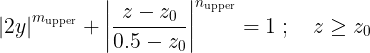
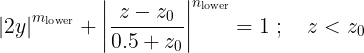
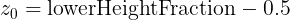
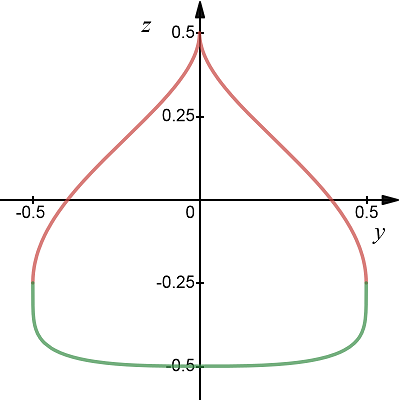
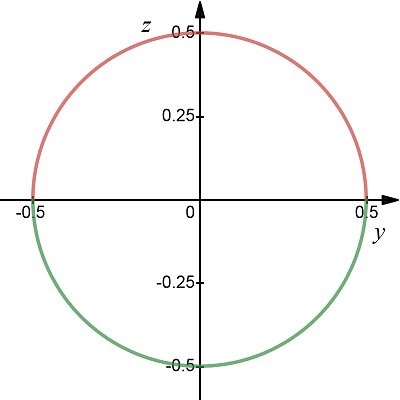
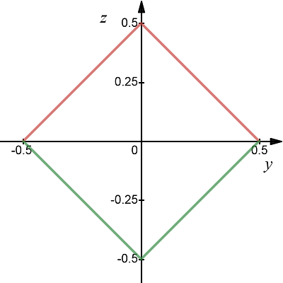

complexType · extension complexBaseType · all
Superellipse
A profile based on superellipses is composed of an upper and a lower semi-ellipse, which may differ from each other in their parameterization. The total width and height of the profile is always 1, since scaling is performed after referencing (e.g., in the fuselage).
This lowerHeightFraction describes the portion of the lower semi-ellipse on the total height.
The resulting profile is defined by the following set of equations:


with

The following examples indicate the various possibilities of parametric profiles:
Example 1: (mUpper,nUpper,mLower,nLower, lowerHeightFraction) = (0.5; 2; 5; 3; 0.25)

Example 2: (mUpper,nUpper,mLower,nLower, lowerHeightFraction) = (2; 2; 2; 2; 0.5) = a circle

Example 3: (mUpper,nUpper,mLower,nLower, lowerHeightFraction) = (1; 1; 1; 1; 0.5) = a square / diamond

Note: For exponents that are infinitely large, the superellipse converges to a rectangle. However, the value Inf is not a valid entry at this point. Use the square element instead.
| Name | Type | Constraints | Use | Default | Description |
|---|---|---|---|---|---|
@externalDataDirectory | xsd:string | optional | Directory of the external data file | ||
@externalDataNodePath | xsd:string | optional | Path of the node inside the external data file | ||
@externalFileName | xsd:string | optional | Name of the external data file |
| Name | Type | Constraints | OccurrenceHow often the element may appear at this place. The schema writes it as minOccurs and maxOccurs on the declaration. | Default | Description |
|---|---|---|---|---|---|
| allThe children below may appear in any order. Each may appear at most once. | |||||
mUpper | posExcl0DoubleBaseType | minExclusive | [1..1] required | Exponent m for upper semi-ellipse | |
nUpper | posExcl0DoubleBaseType | minExclusive | [1..1] required | Exponent n for upper semi-ellipse | |
mLower | posExcl0DoubleBaseType | minExclusive | [1..1] required | Exponent m for lower semi-ellipse | |
nLower | posExcl0DoubleBaseType | minExclusive | [1..1] required | Exponent n for lower semi-ellipse | |
lowerHeightFraction | doubleBaseType | minExclusive, maxExclusive | [1..1] required | Height of the lower semi-ellipse relative to the total height | |
cpacs/vehicles/profiles/fuselageProfiles/fuselageProfile/standardProfile/superEllipsecpacs/vehicles/profiles/wingAirfoils/wingAirfoil/standardProfile/superEllipsecpacs/vehicles/profiles/rotorAirfoils/rotorAirfoil/standardProfile/superEllipse| Type | Name |
|---|---|
standardProfileType | superEllipse |